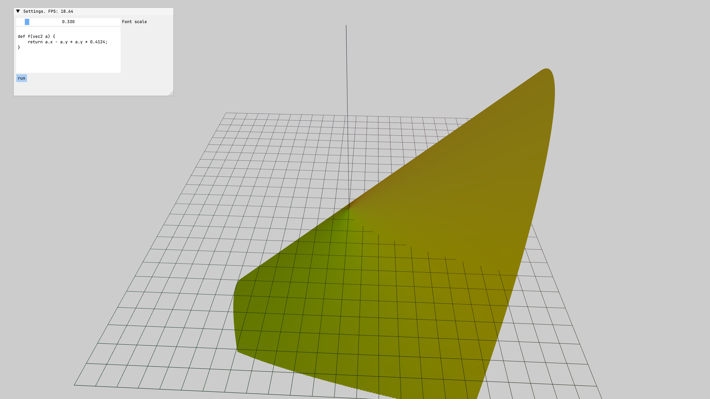

Отрисовка пользовательской функции в 3D
Описание
Создается приложение, в котором пользователь может вводить функцию на языке ast-lang-2 и отрисовывать ее график в 3D.

Код
#include <ast-lang-2/interpreter/interpreter.hpp>
#include <battery/embed.hpp>
#include <ccl/runtime.hpp>
#include <imgui.h>
#include <imgui_stdlib.h>
#include <mv/application_3d.hpp>
#include <mv/gl/axes_3d.hpp>
#include <mv/gl/instance_parameters.hpp>
#include <mv/gl/instances_holder.hpp>
#include <mv/gl/shape/function_3d.hpp>
#include <mv/gl/shape/sphere.hpp>
#include <mv/shader.hpp>
#include <mvl/mvl.hpp>
class FunctionVisualizer3DApplication final : public mv::Application3D
{
private:
std::array<char, 128> imguiWindowBuffer{};
mv::Shader colorShader = mv::Shader{
{b::embed<"resources/shaders/colored_shader.vert">().str()},
{b::embed<"resources/shaders/fragment.frag">().str()},
};
mv::gl::shape::Axes3D axes3D{12};
mv::gl::shape::Function3D function;
double pressTime = 0.0;
float evaluationTimeNs = 0.0;
float fontScale = 0.33F;
ImFont *font = nullptr;
std::string sourceCode = R"(
def f(vec2 a) {
return a.x * a.x + a.y * a.y;
}
)";
std::string programOutput = "";
bool disableInput = false;
public:
using Application3D::Application3D;
auto init() -> void override
{
Application3D::init();
setClearColor({0.8F, 0.8F, 0.8F, 1.0F});
glfwSetInputMode(window, GLFW_CURSOR, GLFW_CURSOR_DISABLED);
function.loadData();
axes3D.loadData();
function.vbo.bind();
function.vao.bind(0, 3, GL_FLOAT, sizeof(glm::vec3), 0);
axes3D.vbo.bind();
axes3D.vao.bind(0, 3, GL_FLOAT, sizeof(glm::vec3), 0);
colorShader.use();
colorShader.setMat4("model", glm::mat4(1.0f));
colorShader.setVec4("elementColor", glm::vec4(0.5f, 0.5f, 0.0f, 1.0f));
ImGui::StyleColorsLight();
font = loadFont<"resources/fonts/JetBrainsMono-Medium.ttf">(45.0F);
camera.setPosition(glm::vec3(0.0F, 12.0F, 10.0F));
}
auto update() -> void override
{
fmt::format_to_n(
imguiWindowBuffer.data(), imguiWindowBuffer.size(),
"Settings. FPS: {:#.4}###SettingWindowTitle", ImGui::GetIO().Framerate);
ImGui::Begin(imguiWindowBuffer.data());
ImGui::PushFont(font);
ImGui::SetWindowFontScale(fontScale);
ImGui::SliderFloat("Font scale", &fontScale, 0.1F, 3.0F, "%.3f");
ImGui::InputTextMultiline("##Program input", &sourceCode);
if (ImGui::Button("run")) {
tryToDrawFunctionWithUserFunction();
}
disableInput = ImGui::IsWindowFocused();
ImGui::TextUnformatted(programOutput.c_str(), programOutput.c_str() + programOutput.size());
const glm::mat4 resulted_matrix = getResultedViewMatrix();
colorShader.use();
colorShader.setVec4("elementColor", glm::vec4(0.5f, 0.5f, 0.0f, 1.0f));
colorShader.setMat4("projection", resulted_matrix);
function.draw();
colorShader.setVec4("elementColor", glm::vec4(0.1f, 0.1f, 0.1f, 1.0f));
axes3D.draw();
ImGui::PopFont();
ImGui::End();
}
auto tryToDrawFunctionWithUserFunction() -> void
{
try {
ccl::runtime::async(calculateFunctionPoints()).await();
} catch (const std::exception &e) {
programOutput = e.what();
}
}
auto calculateFunctionPoints() -> isl::Task<>
{
auto node = ccl::runtime::async(mvl::parse(sourceCode, "stdin"));
programOutput.clear();
auto interpreter = mvl::newInterpreter(std::back_inserter(programOutput));
(co_await node)->compute(interpreter);
const auto *user_function = interpreter.getFunction(
astlang2::function::FunctionIdentification{
.name = "f",
.arguments = isl::SmallVector<astlang2::ts::Type *, 4>{interpreter.getVec2()},
.returnType = interpreter.getDouble()});
const auto *vec2_constructor = interpreter.getFunction(
astlang2::function::FunctionIdentification{
.name = "vec2",
.arguments =
isl::SmallVector<astlang2::ts::Type *, 4>{
interpreter.getDouble(), interpreter.getDouble()},
.returnType = interpreter.getVec2()});
const std::function function_invoker = [&user_function, &interpreter,
vec2_constructor](glm::vec2 vec) {
auto vec2 = vec2_constructor->call(
interpreter, {astlang2::Value{
.object = astlang2::AstlangObject<double>(vec.x),
.type = interpreter.getDouble()},
astlang2::Value{
.object = astlang2::AstlangObject<double>(vec.y),
.type = interpreter.getDouble()}});
const auto result = user_function->call(interpreter, {vec2});
return static_cast<float>(*static_cast<double *>(result.object.get()));
};
const auto begin = std::chrono::high_resolution_clock::now();
this->function.evaluatePoints(
function_invoker, -10.0F, -10.0F, -15.0F, 10.0F, 10.0F, 15.0F);
const auto end = std::chrono::high_resolution_clock::now();
this->function.loadData();
fmt::println("{}us", (end - begin) / std::chrono::microseconds(1));
co_return;
}
auto processInput() -> void override
{
constexpr static auto key_press_delay = 0.2;
if (!disableInput) {
Application3D::processInput();
}
const auto left_alt_pressed = glfwGetKey(window, GLFW_KEY_LEFT_ALT) == GLFW_PRESS;
const auto key_g_pressed = glfwGetKey(window, GLFW_KEY_G) == GLFW_PRESS;
if (left_alt_pressed && key_g_pressed) {
const auto mode = glfwGetInputMode(window, GLFW_CURSOR);
const double new_press_time = glfwGetTime();
if (new_press_time - pressTime < key_press_delay) {
return;
}
pressTime = new_press_time;
firstMouse = true;
isMouseShowed = mode == GLFW_CURSOR_DISABLED;
glfwSetInputMode(
window, GLFW_CURSOR, isMouseShowed ? GLFW_CURSOR_NORMAL : GLFW_CURSOR_DISABLED);
}
}
};
auto main() -> int
{
FunctionVisualizer3DApplication application{1000, 800, "Function visualizer", 16};
application.run();
return 0;
}